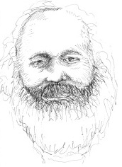

“Filozoflar yalnızca dünyayı pek çok şekilde yorumladılar; ancak önemli olan onu değiştirmektir,”
-Karl Marx, Feuerbach Üzerine Tezler (1845)

Komünizmin entelektüel babası Karl Marx (1818-1883), yirminci yüzyıl üzerinde herhangi bir filozoftan daha fazla etkide bulundu.1818’de Almanya’daki Trier’de etnik olarak Yahudi olup Hıristiyanlığa dönmüş olan bir ailede doğan Marx, başlangıçta akademik bir kariyeri kovaladı, ama radikal siyasi eğilimleri yüzünden başvurusu kabul edilmedi. Marx, Almanya’da 1848 devriminde yer almasından çok önce yıllarca bir gazeteci olarak çalıştı. O devrim başarısız olduğunda, hayatının geri kalanında yaşadığı Londra’ya kaçtı.
Marx’ın tarih kuramında, ekonomik üretimin araçları, tarihî ve siyasi değişimi açıklar. Herhangi bir zamanda bir toplum, yiyecek ve barınak şekilleri gibi ekonomik malları üretmenin belli araçlarına sahiptir. Üretim araçları, belirli bir ekonomik düzenlememeyi belirler. Örneğin, tarım toprağı işlemek için büyük ölçüde insana ve bu işi gözetlemesi için de birkaç insana gereksinim duyar. Bu ekonomik düzenleme, karşılığında siyasi sistemi belirler. Tarım durumunda, çiftçiler toprağın sahibi olan ve ekinlerinin bir kısmı karşılığında diğer derebeylerinden onları koruyan toprak sahibi için çalıştılar. Devrim, ekonomik düzenleme ve siyasi sistem ekonominin üretici güçlerine engel olduğu zaman oluşur.
Her bir ekonomik sistemde, bir iş bölümü vardır, o nedenle insanların sınıflara ayrılması söz konusudur. Marx, malların kullanılmaktan çok değiş tokuş edilmesi için yaratılan ekonomik bir sistem olarak nitelediği kapitalizmi, uzun bir tarihî gelişimin ürünü olarak gördü. Kapitalizmde, sınıf ayrımı kırılma noktasına kadar abartılır. Üretim araçlarına sahip olan küçük bir azınlık (burjuva) zenginleşirken, çok sayıda işçi (proletarya) sefalet içinde ırgat gibi çalışırlar. Marx, kapitalizmin kendi sonunu getireceğini öne sürdü. Kapitalizm geliştikçe, daha kötüleşen şartlarda yaşayan giderek büyüyen sayıda proletaryayı yaratacağını savundu. Nihayetinde işçiler ayaklanacak ve farklı, ortak bir ekonomik sistem – her birinin ihtiyaçlarına göre aldıkları ve becerilerine göre verdikleri bir sistem – kuracaklar.
EK BİLGİLER:
1. Marx eserlerinin birçoğunu Alman bir sanayicinin oğlu olan Friedrich Engels (1820-1895) ile beraber yazdı. İşbirlikleri, Marx’ın ustalık eseri olarak bakılan çok ciltli “Kapital” eserini de kapsar.
2. Marx, kapitalizmin çöküşünü takip eden ve “proletaryanın diktatörlüğü” olarak gerçek komünizmin müjdesini veren devleti tarif etti.